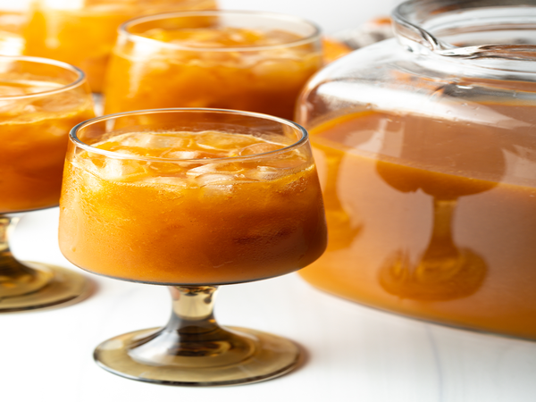

Recipe for pumpkin juice
If you have ever wondered how Harry Potter's delicious Pumpkin Juice is made at Hogwarts, here are the recipe
and instructions on how to make it!
INGRIDIENTS
- 4 liters apple cider apple juice works fine too
- 15 ounces pumpkin puree
- 1/2 cup sugar
- 1/2 cup brown sugar
- 2 teaspoons pumpkin pie spice
- 2 teaspoons vanilla
INSTRUCTIONS
- Combine all ingredients in a large pitcher and stir well.
- Pour over ice in individual glasses, and top with cinnamon sticks and a straw. (Apple slices optional)
- Stir again before each serving to prevent settling.